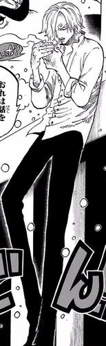
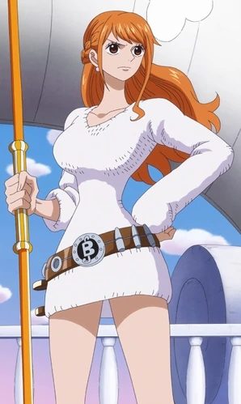
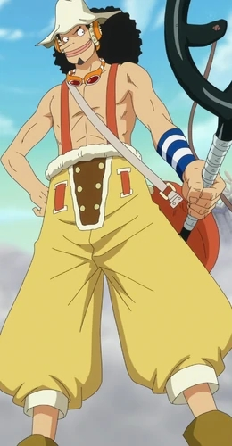
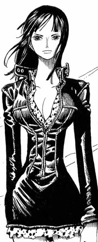
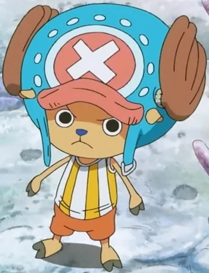
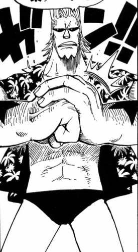
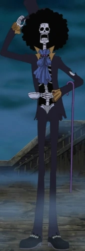
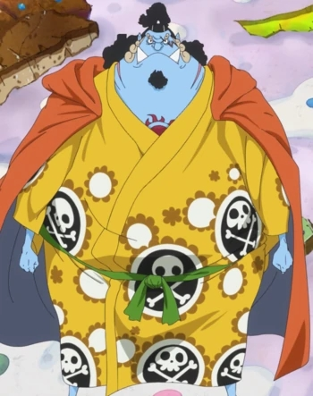

PERSONAJES PRINCIPALES
MONKEY D. LUFFY:
- Monkey D. Luffy , más conocido como Luffy «Sombrero de Paja» , es el protagonista principal de la serie de manga y anime One Piece. Es el capitán y fundador de los Piratas de Sombrero de Paja así como un de los Cuatro Emperadores que gobiernan los mares del Nuevo Mundo. Comió una fruta del diablo llamada fruta Gomu Gomu, que le convirtió en un hombre de goma. Además de esto, posee varias habilidades que le hacen ser un pirata más que especial; un gran ejemplo de ello es la capacidad de usar el haoshoku haki ―que sólo lo posee una persona dentro de un millón― y poseer también los otros dos tipos de haki. Luffy pertenece a una familia plagada de personajes conocidos mundialmente: es hijo del líder del Ejército Revolucionario y criminal más buscado del mundo, Monkey D. Dragon; nieto del héroe de la Marina y anterior vicealmirante Monkey D. Garp, hermano adoptivo del conocido pirata Ace "Puño de Fuego" ―antiguo comandante de la segunda división de los Piratas de Barbablanca―, así como del oficial general del Ejército Revolucionario, Sabo. Su objetivo en la vida es convertirse en el próximo Rey de los Piratas, encontrar el legendario tesoro conocido como el "One Piece", que perteneció al anterior Rey de los Piratas Gol D. Roger, y conquistar el Nuevo Mundo liderando una tripulación formada por grandes piratas.

RORONOA ZORO:
- Roronoa Zoro , conocido como El Cazador de Piratas, es el combatiente de los Piratas de Sombrero de Paja, y uno de sus dos espadachines, así como un antiguo cazarrecompensas.
Fue el primer miembro en unirse a la tripulación, y es considerado parte del Trío Monstruoso junto a Luffy y Sanji. Su sueño es convertirse en el mejor espadachín del mundo. Zoro también es considerado uno de los Once Supernovas que forman parte de «la peor generación», ya que llegó al Archipiélago Sabaody con 120.000.000 de recompensa.
Después de los acontecimientos del arco de Dressrosa obtuvo una recompensa de 320.000.000, siendo la cuarta más alta de la tripulación, después de las de Luffy, Jinbe y Sanji.
Actualmente posee una recompensa de 1.111.000.000, siendo la segunda más alta de la tripulación solo superada por la de Luffy.Zoro viste una camisa blanca, pantalones negros, botas del mismo color y usa un haramaki verde, armadura tradicional de los samurái, aunque el suyo no es del diseño original: lo suele usar solo para aguantar sus espadas. Siempre lleva con él una bandana negra que habitualmente lleva anudada en el antebrazo del brazo izquierdo, y siempre se la ata a la cabeza cuando combate seriamente, aportándole una imagen más tenebrosa que llega a causar temor en muchos de sus oponentes, y a algunos les lleva a afirmar que se trata de un auténtico demonio. Al igual que Luffy, suele cambiar su vestuario en alguna situación o lugar que tenga un clima extremo como Arabasta o Drum. Lo único que no cambia es su pantalón y rara vez se quita el haramaki, aunque alguna vez se le ha podido ver sin él.

VINSMOKE SANJI:
- Sanji (サンジ Sanji?), conocido como Pierna Negra (黒脚 Kuro Ashi?) y nacido como Vinsmoke Sanji (ヴィンスモーク・サンジ Vinsumōku Sanji?), es el cocinero de los Piratas de Sombrero de Paja. Es el quinto miembro de la tripulación, y el cuarto en unirse. Él nació en el North Blue, siendo el primer tripulante en no ser originario del East Blue.
Nacido como el cuarto hijo de la familia Vinsmoke, y por ende como uno de los príncipes del Reino de Germa, Sanji se exilió de su país y renegó de su familia, yéndose al East Blue y pasando a trabajar como cocinero en el Baratie, hasta que decidió unirse a la banda. Es considerado parte del Trío Monstruoso (怪物三人組 Kaibutsu San-ningumi?) junto a Luffy y Zoro; y, como tal, es uno de los combatientes más fuertes de la tripulación. Su sueño es encontrar el mar legendario conocido como All Blue.
Después de los acontecimientos del arco de Whole Cake Island obtuvo una recompensa de 330.000.000 siendo así la tercera mas alta de la tripulación, superada solo por la de Jinbe y Luffy. A pesar de haber renunciado al apellido de su familia, el Gobierno Mundial le sigue reconociendo como parte de esta, estando su nombre de nacimiento en su cartel de recompensa.
Actualmente posee una recompensa de 1.032.000.000 que obtuvo después de los acontecimientos del arco del País de Wano, siendo la cuarta recompensa más alta de la tripulación superada por la de Luffy, Zoro y Jinbe.

NAMI:
- Nami (ナミ Nami), apodada Gata Ladrona (泥棒猫 Dorobō Neko) es una pirata y la navegante de los Piratas del Sombrero de Paja, así como una de las protagonistas principales de la serie. Es el tercer miembro de la tripulación y la segunda en unirse, haciéndolo oficialmente durante el arco de Arlong Park.
Ella era anteriormente un miembro de los Piratas de Arlong e inicialmente se unió a los de Sombrero de Paja con el fin de robarles, pero se unió oficialmente tras rebelarse contra Arlong y su posterior derrota a manos de Luffy. Actualmente posee una recompensa de 366.000.000. Nami es una chica joven, de tamaño normal con una constitución delgada, y que originalmente tenía el pelo corto de color naranja. En el anime ella fue el primer personaje principal en aparecer en el episodio 1 antes que Luffy (aunque en el manga apareció al principio del arco de la ciudad Orange). Muchas personas la consideran muy atractiva y hermosa, comparándola en una ocasión con una diosa. Ella tiene un tatuaje azul (negro en el manga) en su hombro izquierdo que representa una mandarina y un molinillo (un homenaje a Bell-mère y Genzo, respectivamente), en donde ella antes tenía un tatuaje que indicaba que ella era miembro de la banda de Arlong.

USOPP:
- Usopp (ウソップ Usoppu?) es el francotirador de los Piratas de Sombrero de Paja. Es el cuarto miembro de la tripulación y el tercero en unirse oficialmente. A pesar de abandonar la banda en el arco de Water 7, se volvió a unir en el arco del regreso a Water 7.
Es proveniente de la villa Syrup en el East Blue. Ahí ejerció como capitán de los Piratas de Usopp, pero tras los eventos del arco de Villa Syrup, se unió a los Sombrero de Paja. Su sueño es convertirse en un valiente guerrero de los mares como su padre. Su recompensa actual es de 500.000.000.
Durante la mayor parte de la historia, Usopp es un joven de piel blanca pero bronceada y constitución delgada, ojos grandes y redondos, labios gruesos y pelo negro muy rizado de longitud media; aunque el rasgo más llamativo de su apariencia es, sin duda, su larga nariz (que aparentemente es una alusión al personaje de Pinocho, el protagonista de un cuento del mismo nombre, un niño de madera al que le crecía la nariz cada vez que decía mentiras). Este llamativo rasgo fue aparentemente heredado de su madre, mientras que en todos los demás rasgos de su rostro es prácticamente idéntico a su padre (esto es notable incluso teniendo en cuenta que el aspecto de su padre ha sufrido muchos cambios con el paso del tiempo; sobre todo en lo referente al cabello, que pasa de ser igual de negro y rizado que el de su hijo a ser rubio y llevar rastas). En lo que se refiere a su cuerpo, Usopp es algo más alto que Luffy (mide 174 cm.) y su constitución es, si hacemos comparación, más semejante a la de Sanji y del capitán, que a la de Zoro o mucho menos Franky.

NICO ROBIN:
- Nico Robin (ニコ・ロビン Niko Robin?), también conocida por sus epítetos: Niña Demonio (悪魔の子 Akuma no Ko?) y La Luz de la Revolución (革命の灯 Kakumei no Tomoshibi?) es la arqueóloga de los Piratas de Sombrero de Paja. Es el séptimo miembro de la tripulación y el sexto en unirse, haciéndolo al final del arco de Arabasta. Dejó temporalmente a la tripulación durante el arco de Water 7, pero se reincorporó durante el arco de Enies Lobby.
Su sueño es conocer la verdadera historia investigando en los poneglyphs. Actualmente ofrecen una recompensa de 930.000.000 por su cabeza, siendo la quinta más alta de toda su tripulación.
Es la única superviviente del Clan de Ohara, sucediendo a todos sus predecesores como arqueóloga, y fue la mano derecha del jefe de la organización criminal Baroque Works bajo el alias de Miss All Sunday (ミス・オールサンデー Misu Ōrusandē?). También consumió la fruta Hana Hana.
Nico Robin es una mujer alta, delgada pero atlética, con pelo negro hasta los hombros. Sus ojos son de color azul en el anime (con grandes y anchas pupilas de color azul oscuro al principio y negro más adelante) y de color marrón en el manga (también en la película 10). Su nariz es larga y recta, delgada y definida. Las extremidades de Robin son muy largas, especialmente sus piernas, lo que contribuye en gran medida tanto a aumentar su capacidad de combate (dada la naturaleza de sus poderes) como su altura total; y, como la mayoría de los personajes femeninos de la serie, tiene una cintura estrecha. Muchas personas consideran su atractivo o belleza

TONY TONY CHOPPER:
- Tony Tony Chopper (トニートニー・チョッパー Tonī Tonī Chopā?) es el médico de los Piratas de Sombrero de Paja. Es un reno que comió la fruta Hito Hito de la isla de Drum. Él es el sexto miembro de la tripulación y el quinto en unirse a ella. Es un Reno de nariz azul que comió la fruta Hito Hito, adquiriendo forma e inteligencia humana. La mayor parte del tiempo, Chopper mantiene un tamaño pequeño, con forma de reno-humanoide (brain point); las habilidades de su fruta del diablo le permiten cambiar de apariencia dependiendo de la situación. El cuerno izquierdo de Chopper tiene una placa metálica alrededor porque se lo rompió en una pelea cuando era más joven, y Hiriluk se lo trató. Chopper tiene un rasgo destacable que ningún otro reno tiene: su nariz azul.
Varios personajes en One Piece han pensado al principio que Chopper es un mapache (del japonés "tanuki"), debido al aspecto que tiene cuando se halla en su forma "Brain Point". En realidad se trata de un juego de palabras: el término japonés "tonakai", que significa reno, es de donde viene el "Tony" del nombre completo de Chopper. A diferencia de su "Brain Point", cuando Chopper está en su "Heavy Point", es confundido con un gorila o un yeti.

FRANKY:
- Franky (フランキー Furankī?) cuyo verdadero nombre es Cutty Flam (カティ・フラム Kati Furamu?), es un cyborg (mitad androide, mitad humano) quien era el líder de la Familia Franky, un grupo de desmanteladores de Water 7 que hacen a la vez el trabajo de cazadores de recompensas.
Tras los eventos de Dressrosa cuenta con una recompensa de 94.000.000.
Es el octavo miembro de la tripulación de Luffy, tomando el puesto de carpintero. Franky nació en el South Blue. Su sueño es construir una nave que sea capaz de viajar por todo el mundo. Ya construyó esta nave, el Thousand Sunny, y ahora debe verificar que navegue por todo el mundo (como alguna vez lo hizo el Oro Jackson, el barco de Gol D. Roger) y vigilar sus fallos y repararlos. Franky es el tercer miembro más alto y viejo de la tripulación de Luffy. Cuando era Cutty Flam, era un poco más delgado y pequeño, pero cuando se hizo cyborg y adquirió el apodo de Franky como nombre, su cuerpo cambió radicalmente, dándole una apariencia más fuerte, pero un poco menos humana (cosa que se nota visiblemente en su cara, la cual está compuesta de una mandíbula y nariz de metal).

BROOK:
- Brook (ブルック Burukku?) es el músico de los Piratas de Sombrero de Paja, y uno de sus dos espadachines.
Es un esqueleto viviente que encontraron en un barco fantasma solo, porque habían envenenado a toda su anterior tripulación. Es el consumidor de una fruta del diablo, más concretamente la fruta Yomi Yomi, y ahora es un no-muerto traído de vuelta al mundo de los vivos como un pseudo-inmortal, debido a sus poderes. Es el noveno miembro de la banda y el octavo en aceptar unirse a la banda de Luffy, quien llevaba esperando ansiosamente un músico en su tripulación desde el comienzo de su aventura.
Al principio de su historia como pirata formó parte de los Piratas Rumbar, llegando incluso a ser seleccionado como capitán por parte de lo que quedaba de la tripulación original después de que el anterior portador de ese cargo cayese enfermo junto a otros tripulantes. Brook es particularmente el más cercano a Laboon y carga consigo la última canción que compartió con su antigua tripulación, grabada en un Tone Dial, antes de que todos murieran, para ser entregada a la ballena que consideraban parte de la misma banda pirata. Antes de eso, fue el líder de un convoy de batalla en una isla, hasta el momento, desconocida

JINBE:
- Jinbe el Caballero del Mar (海侠のジンベエ Kaikyō no Jinbē?) es el timonel de los Piratas de Sombrero de Paja, siendo el décimo miembro de la banda y el noveno en unirse. Es un gyojin tiburón ballena,[2] que sirvió como antiguo capitán de los Piratas del Sol y como miembro de los Siete Señores de la Guerra del Mar.
Su nombre fue mencionado por primera vez por Yosaku cuando explicó el sistema de los Siete Señores de la Guerra del Mar. Sin embargo, fue introducido mucho más tarde en el arco de Impel Down. Renunció a su título como uno de los Siete Señores de la Guerra del Mar en la Batalla de Marineford, aliándose a los Piratas de Barbablanca. Durante la guerra formó una amistad con Monkey D. Luffy, y más tarde se alió con él para evitar el golpe de estado de los Nuevos Piratas Gyojin a la familia Neptune y al Reino de Ryugu. Incluso fue invitado a unirse a los Piratas de Sombrero de Paja, pero declinó debido a que aún estaba afiliado a Big Mom; sin embargo, afirmó que una vez termine sus asuntos pendientes él aceptaría y se uniría a la tripulación.
Tras los hechos ocurridos en Whole Cake Island y finalizar sus cabos sueltos, Jinbe se rebeló contra la tripulación de Linlin[19] y decidió ayudar a los de Sombrero de Paja a escapar de sus garras. Formó parte de una alianza con el equipo de recuperación de Sanji y los Piratas Fire Tank con el objetivo de asesinar a Big Mom, abandonando oficialmente su tripulación durante la boda fallida de Sanji y Charlotte Pudding.
